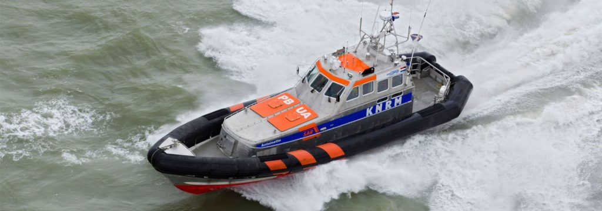

2024
Vår plan för 2024 är äntligen klar, efter många turer fram och tillbaks är vi äntligen klara. I alla fall med de stora dragen, de mindre tar vi som det komme...

Senast uppdaterad:
Log date: 16 aug. 2020
Route: Scheveningen – Stellendam
Chart: https://boating.page.link/zGpj4Lz5n3JkQz646
Time: 09:30 – 18:50 ( 9h 20min )
Distance: 35,8 nm
Average speed: 3,8 knots (Top 8.8 knots)
Wind: 5 – 50 knots
Weather: [X] Rain, [ ] Fog, [X] Sunshine, [X] Cloudy
Visibility: Great to none
Temperature: +20 C
Since the weather report clearly stated that today would be a day with more or less no wind at all and if any it would be dead on we prepared ourselves to motor the short leg that would take us from Scheveningen to Stellendam just south of Rotterdam.
We weren’t really looking forward to the trip since the port of Rotterdam is the biggest one in Europe, we read that the entire port employ about 385.000 people. That number also include all kind of subcontractors but it’s still a cool number that is about 50.000 more than lives in Malmö and that is Swedens third largest city.
The port manage 30.000 sea going vessels per year and about 110.000 inland vessels per year. It’s just crazy busy port.
With all that in our heads we just felt that we should get across as soon as possible so we motored along with more or less no wind at all and what happens? Right infront of the f*****ing entrance of the biggest port of Europe (and number 6 in the world) our engine decide to act out like the worst diva ever and just go:
Direct quote from the engine: Naaa, you guys have to take care of yourselves now, go swim or whatever! I’m just gonna stop cooling myself and boil for a while so you are now on your own suckers!! Muhaahhahahaa!!!
It took the ports traffic control about no time at all to call our name on the VHF and kindly tell us to change our course to not interfere with the big guys. Like who would like to interfere with something that is about 1000000000 times bigger than you. It’s like telling an ant that it isn’t a good idea to cross a motorway. He probably already know that.
Long story short, we crossed the big guys lane and slowly keep sailing while Tony was working on getting the engine cooling system up and running again. A few hours later he gave up. At least the engine could now run for some time before overheating so we would be able to motor into the planned marina later in the evening without any issues.
If we only knew…
Beside the engine trouble everything was just perfect till some dark clouds showed up in the horizon and the rumble they came with gave away that they brought both rain and thunder. At this point we made or first mistake #1, the only thing we asked ourselves was. “I wonder will it rain?” (Sailing idiots…)
Yes the rain came and we got dressed up for some rain, it still didn’t cross our mind that thunder usually brings quite a lot of wind mistake #2.
A few minutes after the first drops of rain, kind of right in the narrow dredged canal that should bring us into the planned marina the wind hit us and it hit us hard. The wind got bumped from about 5 knots (for you who spend your time on land that is the wind that make a pennant move) to the area of 50+ knots in about 2-5 seconds. 50 knots of wind is the kind of wind that closes bridges and have your dog and goldfish to do his business in the bathroom instead of outside your house.
We of course tried to reef our headsail but according Murphy’s law it got twisted with our spinnaker halyard right away so we had a full set of sails going downwind in almost 9 knots. Due to the rain that also went from rain till insane with a mix of hail with a size of small olives the visibility went from okey to absolutely none, nothing, njada. We couldn’t see the shores and we couldn’t see the next navigation mark we barely could see the bow of the boat, the only thing we knew was that the distance to the shoreline was about 100 meters or less and that the canal was far from that wide so we had to rely on our GPS plotter to guide us.
At that point Murphy’s law kicks in again and the boat turns about 180 degrees due to a wind gust that almost flip the boat over, we had water above the gunwale and almost up to the winches in our cockpit and in that mess we lost speed and the GPS could no longer tell the direction the boat was moving since it require movement to plot the actual course. The engine was started to help the boat around and to get the required movement to allow the plotter to display a proper heading. The diva told us right away to bug off by overheating. At that point we called JRCC Den Helder Rescue and told them that we couldn’t reef our sails and that our engine had died. Better safe than sorry, at least they know that we are in trouble and if it gets worse then they are prepared for that as well.
Finally some luck, the marina we were heading to hosted the second largest rescue vessel in the KNRM fleet, Antoinette.
Some stats about Antoinette
Weight: 28 ton
Size: 18,80 x 6,10 x 1,03 m
Engine: 2 x 1000 hp
Speed: 35 knots

Credit: KNRM
It took the guys about 10 minutes to reach us and by that time the weather had calmed enough for us to manage to get the headsail under control and reef the mainsail but even if we would be able to reach the marina by ourselves at that point the guys decided to give us a lift back by acting tow ~car~ boat.
In the end everything went well and we learnt a lot, a few things from the top of the list;
#1: If in doubt, reef. Not soon but right away!
#2: Keep your eyes on those clouds, some of them are are mean like hell.
#3: Everything that in any way can get tangled up will get tangled up.
#4: Prepare for the worst.
What about the engine? Apparently the cooling system had sucked something from the ocean that blocked some pipes that made it boil right away when we needed it the most. The morning after it spit something out that was very similar to something that can be found outside of pubs late in the night but it was made of something oily.
And the spinnaker halyard has now been removed till we can figure out a safe way to keep it without risking not being able to reef the headsail.
Now a few days of rest and drying clothes in Stellendam before we move on south.
Lämna en kommentar